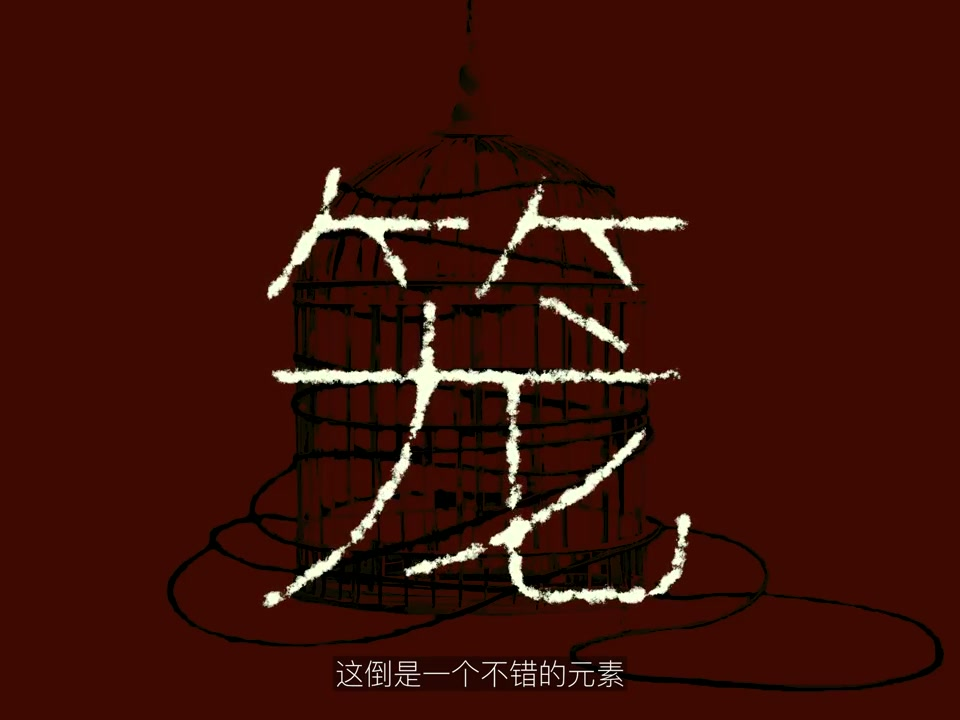
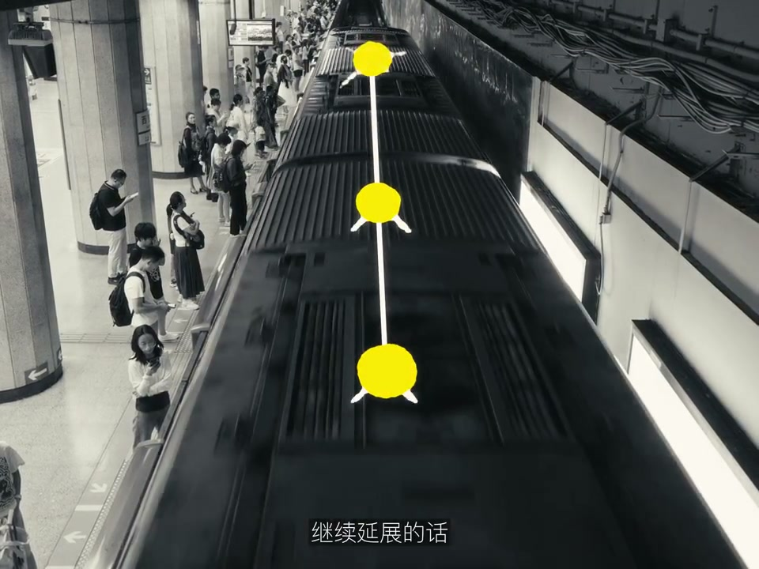

Where does inspiration come from? From wandering, of course.
表达提示from wandering（从闲逛来）
02
中文
收集街头文字真的是非常适合闲逛的时候干的事情。
EN
Collecting street lettering is perfect for wandering.
表达提示street lettering（街头文字）
03
中文
你可以直接把它们用在Vlog里，就是作为首写自己的灵感来源。
EN
Use them directly in vlogs as the source of typography inspiration.
表达提示typography source（字体灵感）
Paraphrase & Chunks 2 组表达
from wandering（从闲逛来
from wandering（从闲逛来
street lettering（街头文字
street lettering（街头文字
S200:54-01:56
线路式灵感：接下来我去看了很多笼子，…
Line-style inspiration: next I saw many ca…
情境像地铁线路一样一站接一站扩展灵感。
01
中文
就像地铁线路一样，从一个地方找到另一个地方。
EN
Like the subway map, going from one place to another.
表达提示like a subway line（像地铁线路）
02
中文
把线路铺开的话，你可能还会想到与这并列的更多主题。
EN
Spread the line and you'll think of parallel themes.
表达提示spread the line（铺开线路）
03
中文
这样线路图上的任意一站，都可以停进你的灵感库里。
EN
Every station on the map can land in your inspiration library.
表达提示stations to library（站点入库）
Paraphrase & Chunks 2 组表达
like a subway line（像地铁线路
like a subway line（像地铁线路
spread the line（铺开线路
spread the line（铺开线路
S301:56-02:48

观影与城市对照：差点忘了，这才是苹果…
Movies and city comparison: almost forgot—…
情境看一部与城市相关的电影，白天走过的路会重现。
01
中文
设备对于创作的界限真的是越来越小。
EN
The device boundary to creation truly shrinks.
表达提示boundary shrinks（界限变小）
02
中文
可以打开一部跟这个城市有关的电影，你白天去过的地方很可能就会出现在画面里。
EN
Open a film set in that city—the places you visited may appear on screen.
表达提示city films（城市电影）
03
中文
当电影结束以后，你又可以立刻回到故事发生的城市中。
EN
When it ends, you step back into the story's city.
表达提示back to the city（回到城市）
Paraphrase & Chunks 2 组表达
boundary shrinks（界限变小
boundary shrinks（界限变小
city films（城市电影
city films（城市电影
S402:48-03:27

公园与结语：同样令人上瘾的还有北京的…
Parks and conclusion: equally addictive ar…
情境公园未必有灵感，以自嘲作结。
01
中文
同样令人上瘾的还有北京的公园，也是去了一个又想去另一个。
EN
Equally addictive are Beijing's parks—one after another.
表达提示addictive parks（上瘾的公园）
02
中文
你在公园这种地方还想有什么灵感？简直是在摧残你的灵感。
EN
Inspiration in a park? You're torturing your inspiration.
表达提示torturing inspiration（摧残灵感）
Paraphrase & Chunks 1 组表达
addictive parks（上瘾的公园
addictive parks（上瘾的公园
今日可练 PRACTICE TODAY
说闲逛找灵感
Wandering the city gathers inspiration directly.
说收集街头文字
Street lettering becomes typography inspiration.
说线路式延展
Follow threads like subway lines to new topics.
说城市电影对照
A film set in your city mirrors the places you visited.
说公园灵感
Even parks—or the lack of it—feed creativity.
避坑 PITFALLS
✕ Wait for inspiration indoors.
✓ Go wander the city to collect it.
灵感靠出门闲逛。
✕ Capture only scenery.
✓ Collect street lettering and elements for vlogs.
街头文字也是素材。
✕ Explore without threads.
✓ Follow a clue like a subway line.
沿线索一站站延展。
✕ Ignore where you are.
✓ A film set in the city echoes your day.
城市电影对照回忆。
✕ Force inspiration everywhere.
✓ Even a dead end can spark the next idea.
没有灵感也是灵感。
认知转变 MINDSET SHIFTS
说灵感只会说 inspiration→用 wandering（闲逛）、inspiration library（灵感库）、threads（线索）说素材只会说 material→用 street lettering（街头文字）、elements（元素）、cages as frames（笼子做框）说创作只会说 create→用 city films（城市电影）、screenshot moments（抓取瞬间）、device boundary（设备界限）